| |
Manual |
This US-SOMO module was conceived to process Multi-Angle Light Scattering (MALS) data collected either autonomously or sequentially/in parallel with Small-Angle X-ray Scattering (SAXS) data. It is based on the data format produced by a commercial developer of such instruments (Wyatt Technology, now part of Waters Corporation), collected and processed using their ASTRA© software versions 6.1.7.17 and 7.3.2.19, respectively. In the end, the data are saved as a comma-separated variables (csv) file containing in columns first the time (usually [min]) and then the Rayleigh ratios [cm-1] and their uncertainties for each scattering detector, and in lines their time-evolution, with the first line reporting the content of each column, such as in this example (uploaded in ExcelTM):
 |
If available, in a separate block within the same csv file, concentration detector data as a function of time, such as the absorbance at a specific wavelength, can also be stored. This is particularly useful when dealing with chromatographic MALS data (see below).
The data used to develop this module were collected using a Wyatt's now discontinued DAWN HELEOS-II MALS photometer, equipped with a glass flow cell. The geometry of this cell (maintained in their new DAWN model) is based on a solid cylinder on which a narrow channel is bored across the circular face, as exemplified in the schematic drawing below (taken from Bernocco et al. Biophys. J. 79(1) 561-583, 2000). As a consequence, the true scattering angle seen by each detector, placed at fixed positions around the circular face, depend on the refractive index of the solvent:
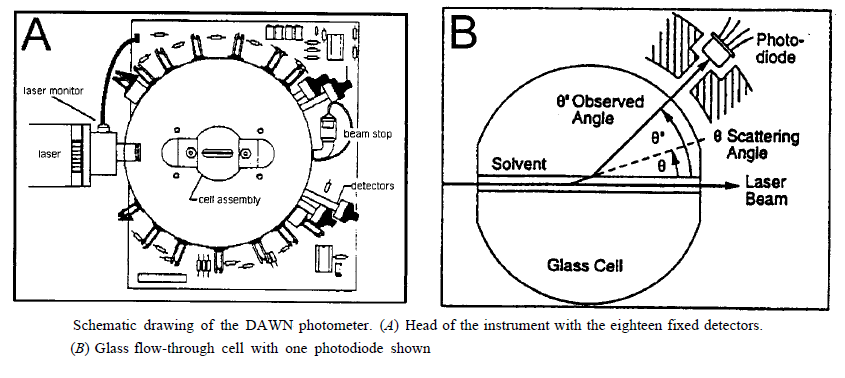 |
Therefore, the user has to prepare a text file containing all the necessary information about the detectors available and their effective scattering angle, such as in this example:
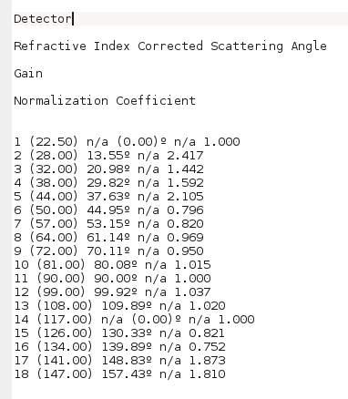 |
which was derived from the "Detailed Report" available in ASTRA© (7.3.2.19). Here the first four lines report the content of the columns that follow: "Detector" (with its physical angle), "Refractive Index Corrected Scattering Angle", "Gain" of each photodiode, and "Normalization Coefficient" of each detector, which is the result of a crucial procedure performed within ASTRA© to compensate for the different physical characteristics of each photodiode and the geometry of their scattering angle. The latter two sets of parameters are not used in our MALS data treatment, since they were used by ASTRA© in producing the Rayleigh ratios at each scattering angle.
Note also that, since one of the photodiodes in the DAWN HELEOS-II MALS photometer utilized for this module development was replaced by a fiber optics for Quasi-Elastic Light Scattering (QELS) (also known as "Dynamic Ligth Scattering (DLS)), in the scattering angles file its position (detector 14 in this case) is marked with a "n/a (0.000)" scattering angle. The US-SOMO MALS module will just avoid processing data from that detector, which, although meaningless, are nevertheless present in the Rayleigh ratios csv exported from ASTRA©.
Data produced by other MALS photometers should be converted to this two-files format and units to be processed by the US-SOMO MALS module.
In the image below, the initial screen of the US-SOMO MALS module is shown:
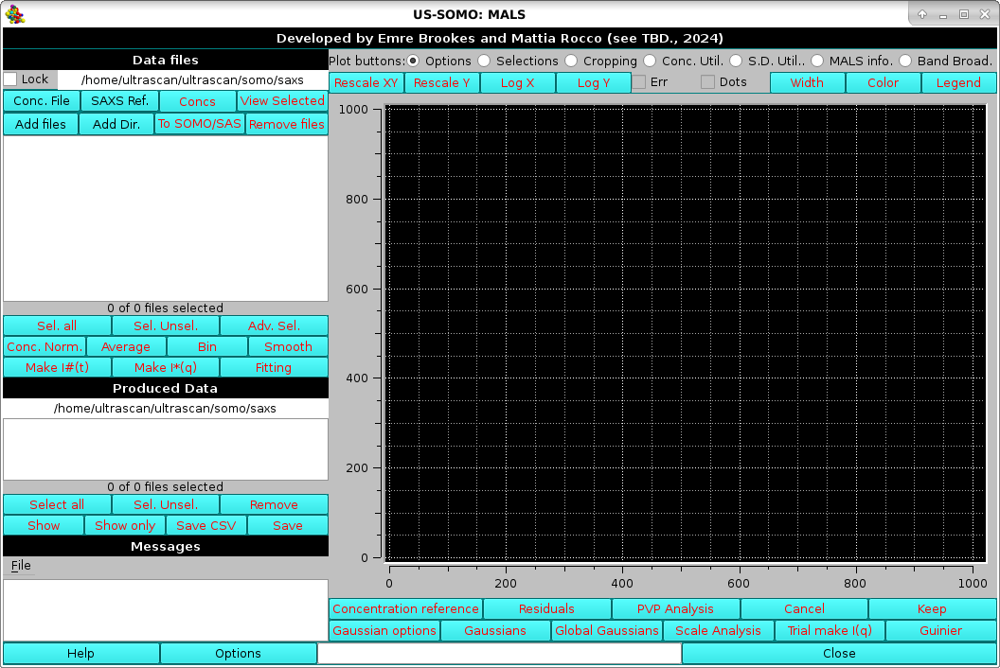 |
As with all other US-SOMO modules, the buttons with the black labels are the ones currently active, and the ones with the red labels are currently inactive but will become active (turning black) when allowed by the processing/visualization stage.
The left side of the window is divided in three sections, labeled "Data files", "Produced Data", and "Messages". By clicking on these labels, the corresponding panel below each label will disappear, allowing for an expansion of the remaining other panel(s). If every panel is made to disappear, the main graph will expand to cover the full size of the MALS module window. By clicking again on the labels, the corresponding panels will be restored.
At the top of the left-side panel, you can pre-select a directory where your data are stored. Clicking on this field (shown in the picture above is the /home/ultrascan/ultrascan/somo/saxs path) will open a directory navigator where you can selected another directory. Checking the Lock checkbox will make the selected directory the default one upon re-starting the application.
In the top left panel (Data files) there are eigth buttons:
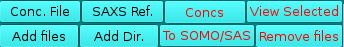 |
The loading and processing of an example Rayleigh ratios csv file will be demonstrated using first a size-exclusion chromatography (SEC) run in which 40 μL of a 7 mg/mL high molecular weight fibrinogen (HMW-FG) sample were injected on a Agilent BioSec 5-500 (particle size 5 μm, pore-size 500 Å) 4.6x150 mm HPLC column, eluted with a 0.3 mL/min flow rate at 20 °C with TRIS 50 mM, NaCl 100 nmM, pH 7.4 (data collected at the SWING beamline of the Synchrotron SOLEIL, Gif-sur-Yvette, France).
After loading the scattering angles files, on loading the Rayleigh ratios csv file a first pop-up panel will appear:
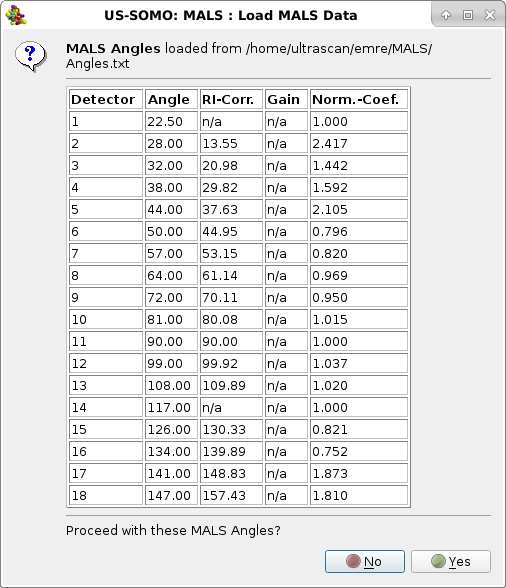 |
listing the correspondence between the detector numbers and the real scattering angles, and asking to either proceed or halt the operation in case an incorrect scattering angles files is recognized. On pressing Yes, another pop-up panel will appear, listing additional processing parameters stored in the MALS Processing Parameters module accessible from the Options module (see here):
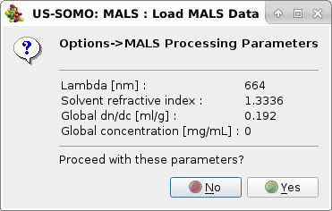 |
These data include the light source wavelength in vacuo λ [nm] and the refractive index ns of the solution, that will be used to automatically convert the scattering angles θ into scattering vectors (or momentum transfer) q (q = [4 π ns sin(θ/2)] / λ) [Å-1]). Also listed are the differential refractive index increment of the solute dn/dc [mL/g] and its global concentration [mg/mL], the latter used when processing kinetic data.
In case of not correct values stored in the MALS Processing Parameters as reported in the pop-up, answering "No" to the "Proceed with these parameters" question will call another pop-up:
 |
reporting the problems. Pressing "Ok" will halt the data loading operation.
If the processing parameters are instead correct, on pressing "Yes" the module will proceed into checking the time intervals for the data present in the Rayleigh ratios csv, and if inconsistencies are found another pop-up will appear, such as:
 |
On pressing "Ok", the module will offer the possibility of adjusting the starting time (useful in case the csv data have already been cropped to begin at the sample injection for chromatographic data or at the start of the reaction for kinetic data), and the collection interval, for which a regularized value is presented:
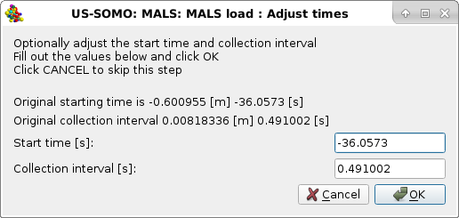 |
Note that the collection times that are in minutes in this example, will be automatically converted to seconds. We can accept the values as presented in this pop-up, noting that the starting time can be later adjusted using the Crop functions (see here). On pressing "Ok", if the Rayleigh ratios csv also contained concentration-related data, such as an UV absorbance chromatogram, a final pop-up will appear:
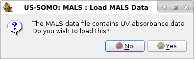 |
Answering "No" will not load the UV data, answering "Yes" the UV data will be uploaded and recognized internally as such by the loading module. In either case, the data loading process will complete, and a list of individual Rayleigh ratios as a function of time R(t) vs. t for each scattering vector q will be produced, as listed in both the "Data files" and "Produced Data" sections, with a message in the "Messages" section:
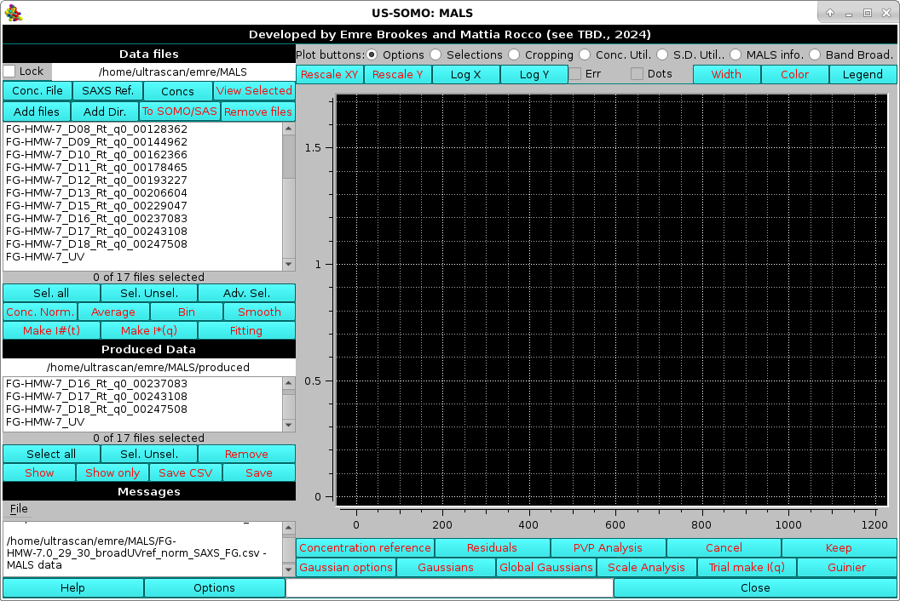 |
Note that the original detector number is listed in the produced filenames: this will become useful when fitting MALS data, giving the possibility of including/excluding detectors based on their recognizable number, rather than by their associated q-value.
Loaded files can be displayed on the graphics panel by individually clicking on them (shift-click will select a contiguous series, ctrl-click allows multiple irregularly spaced selections):
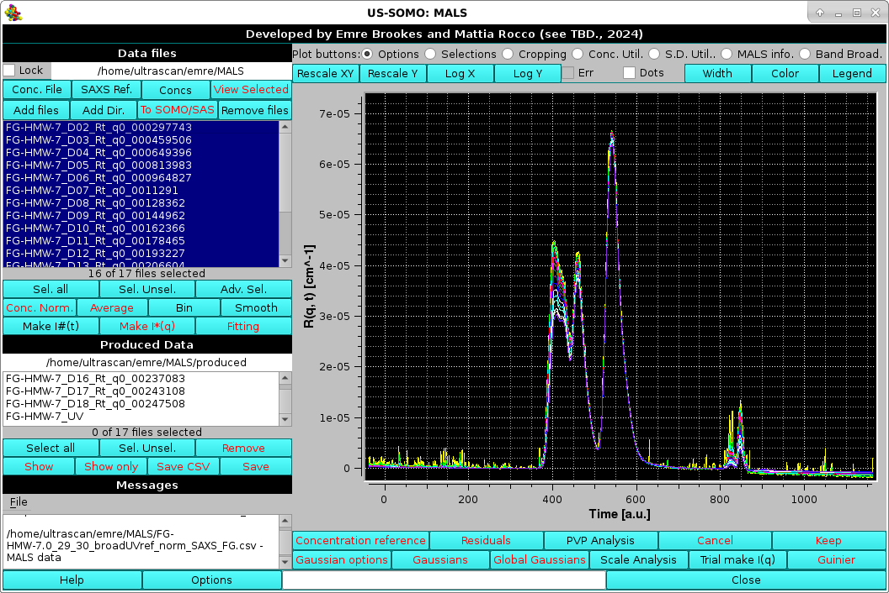 |
Note that the x- and y-axes are now displaying their respective correct units labels. These produced data files can be saved and later retrieved using the Add files button (see here).
As an example involving data collected in kinetics mode, in the images below we show the loading of fibrin re-polymerization data in which fibrin monomer at 0.8 mg/mL obtained from a thrombin-generated fibrin clot dissolved in CH3COONa 100 mM/CH3COOH 110 mM, pH 4.6, and then subjected to preparative SEC, was mixed in a 1:1 ratio with a TRIS-base 65 mM, NaOH 57 mM, NaCl 100 mM, pH 12.6 buffer, obtaining a final buffer composition of TRIS-base 6 mM/TRIS-NH4+Cl- 265 mM, CH3COONa 105 mM, NaCl 23 mM, pH 7.425 that allows re-polymerization. The rapidly mixed solution was injected sequentially in the MALS and SAXS flow cells (data collected with a dedicated facility at the SWING beamline of the Synchrotron SOLEIL, Gif-sur-Yvette, France).
After having modified the MALS Processing Parameters to include a global concentration value, loading a proper Scattering Angles files, and accepting it on adding the kinetics Rayleigh ratios file, the pop-up panel will now show these data:
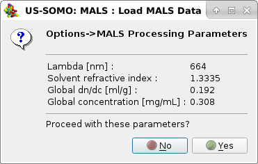 |
Pressing "Yes" will allow the loading to proceed:
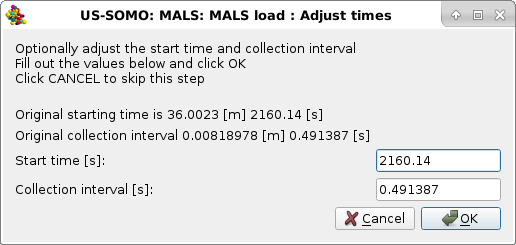 |
This time we can set the time to "0" and press "Ok". The R(q,t) will be produced, and can be visualized by pressing Sel. all:
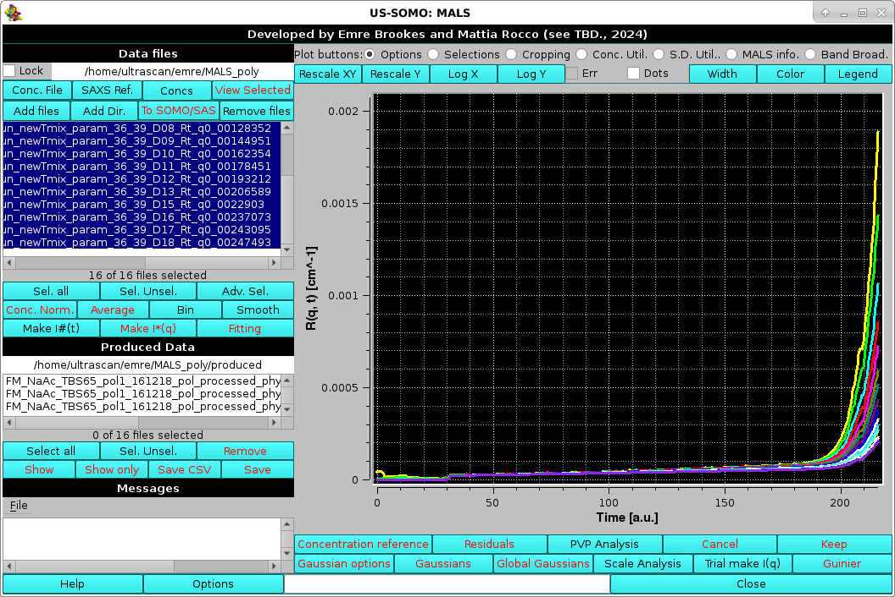 |
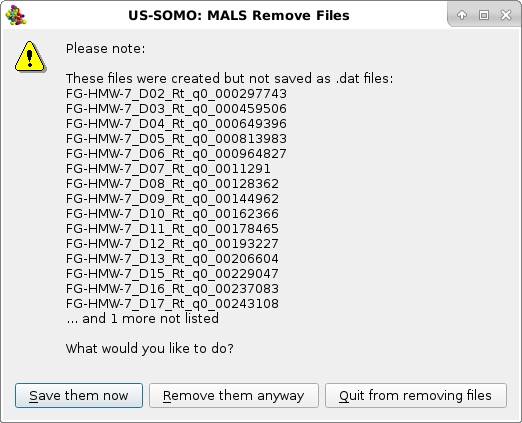 |
Below the window with the loaded files listing there is a second section of buttons:
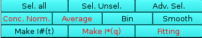 |
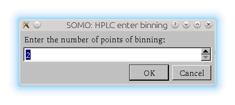
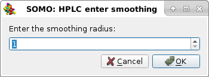
On pressing this button, the data are imediately converted using the parameters stored in the MALS Processing Parameters module, first producing the optical constant K=(4*π2*ns2*(dn/dc)2*λ-4), and then computing I#(t,q) as R(t,q)*NA / K, with NA being Avogadro's number.
The I#(t) vs. t produced data will be shown in the Data files and Produced Data panels, automatically selected only and thus appearing in the graphics window with the correct units posted on the y-axis label:
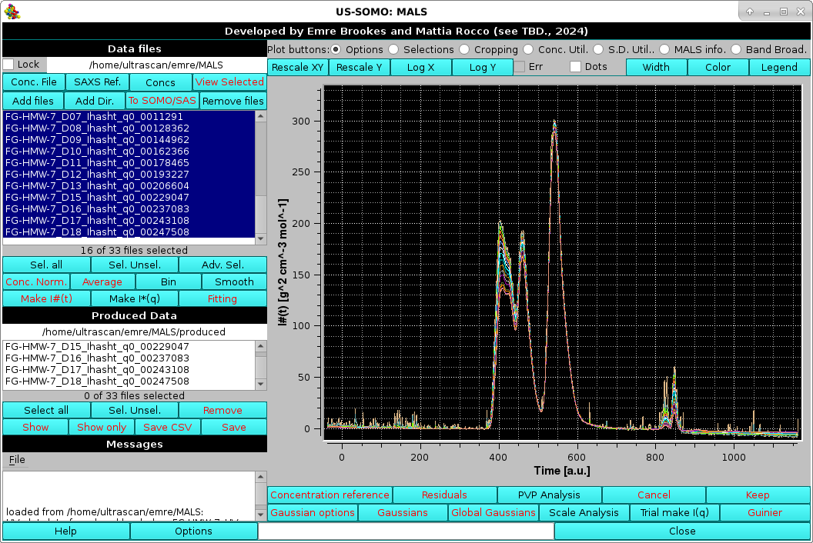 |
Note that these SEC-derived data can be decomposed using Gaussian decomposition much is it is done for SAXS data in the US-SOMO HPLC/KIN module (see here).
We can also show the same Make I#(t) procedure applied to the fibrin re-polymerization kinetic data used above in the Add files button description:
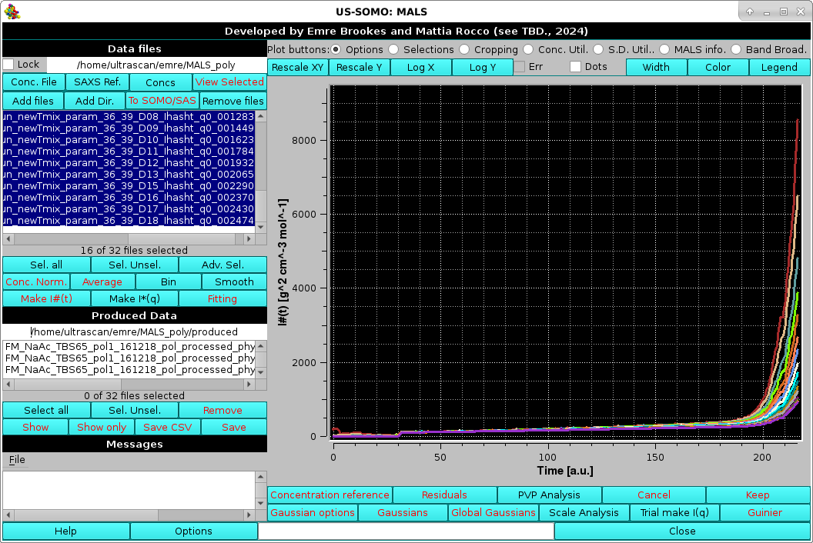 |
Note that a baseline is present in these data, more evident if the first ∼40 s are zoomed and the visualization mode is switched to Dots checking the checkbox present on the top part of the graphics window:
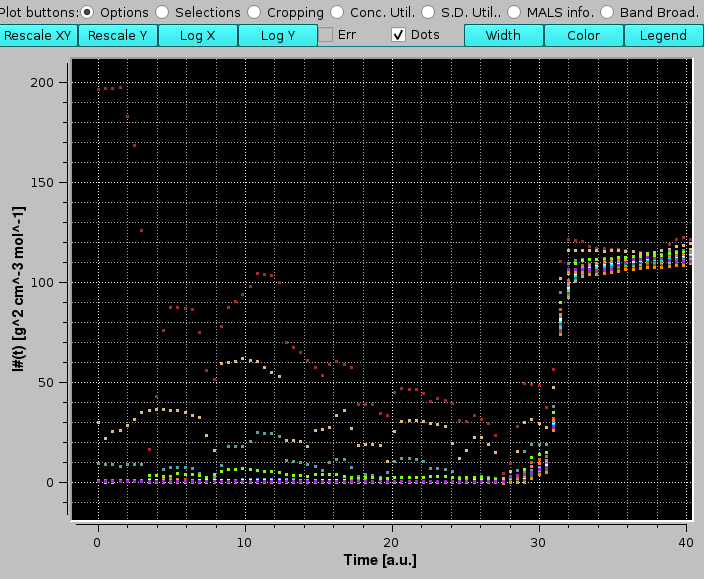 |
The data can be then cropped and the initial time reset to "0" s as will be later explained (see here):
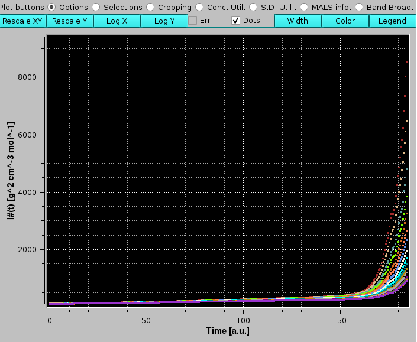 |
As an example, we show the processing of the fibrin re-polymerization kinetic data used above (see here) in the Add files and Make I#(t) buttons description. On pressing Make I*(q), since no Gaussian decomposition parameters were generated or loaded, a pop-up will appear:
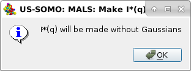 |
Pressing "Ok", if a Global concentration value is not present in the MALS Processing Parameters, a pop-up will appear:
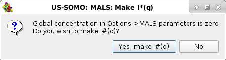 |
alerting of the problem and asking if instead one wants to make I#(q), leaving the generation of the I*(q) at another stage. Pressing "No" will halt operation and another pop-up will appear:
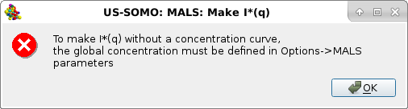 |
explaining the reasons and suggesting the corrective action. After entering the required Global concentration in the MALS Processing Parameters, Make I*(q) can be pressed again, and after the pop-up alerting that no Gaussian decomposition parameters are present, another pop-up will appear reporting the Global concentration value that will be used to generate the I*(q) vs. q data:
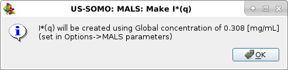 |
On pressing "Ok", the I*(q) vs. q data will be generated:
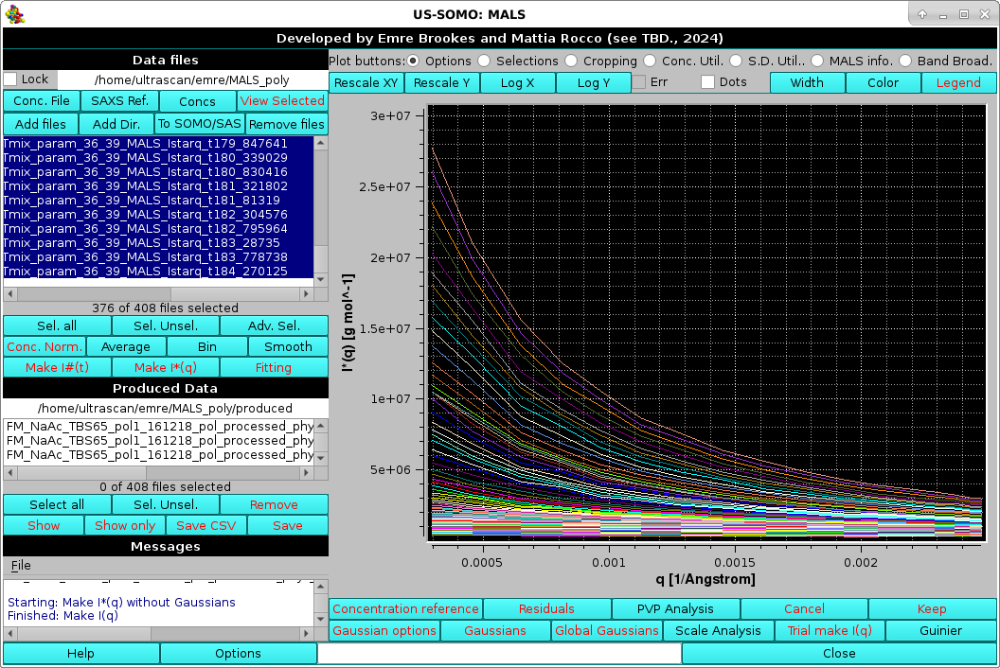 |
with the new files appearing in both the Data files and Produced Data panels, automatically selected only and thus appearing in the graphics window with the correct units posted on the y-axis label. Note that the time for each I*(q) vs. q file is now present in the filename.
By selecting with the Adv. Sel. button from the first I*(q) vs. q time (t=0) every 50 files to t=148.40 (7 files), and selecting the Dots and Err checkboxes present above the graphics window, the evolution of the data can be seen, along with their ASTRA©-derived and propagated error bars:
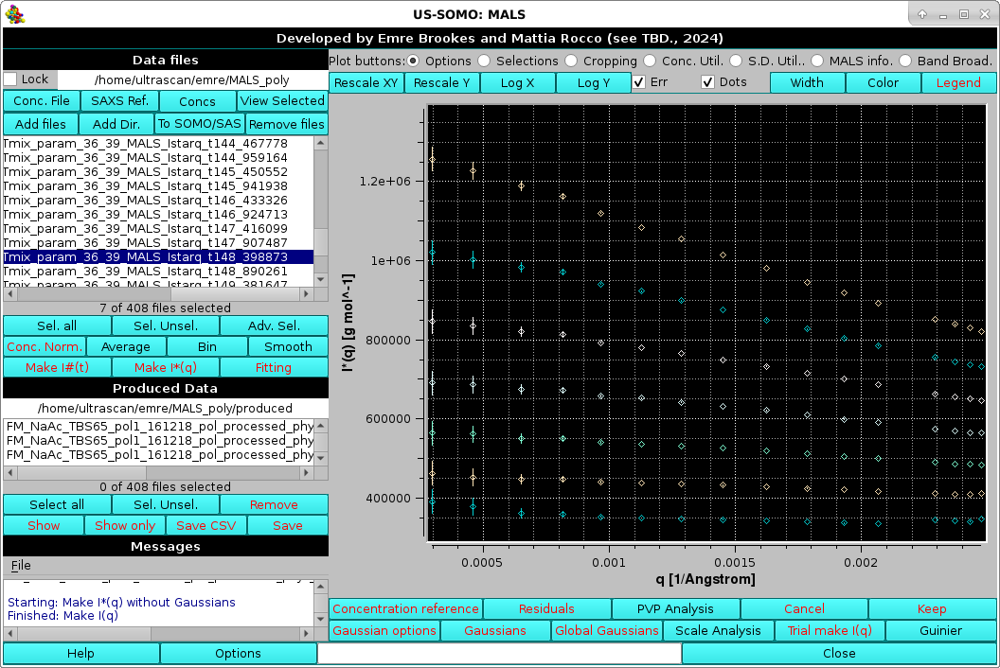 |
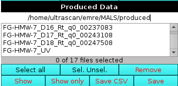 |
By clicking on the file path shown below the Produced Data label, a file system navigator will open, allowing selecting a different directory and/or creating a new one.
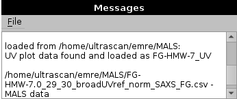 |
The bottom line of this module contains the Help, Options, and Close buttons, with in between a progess bar showing in blue color and with a numeric % value the advancement of the currect action:
 |
On pressing Options, a pop-up panel will be shown:
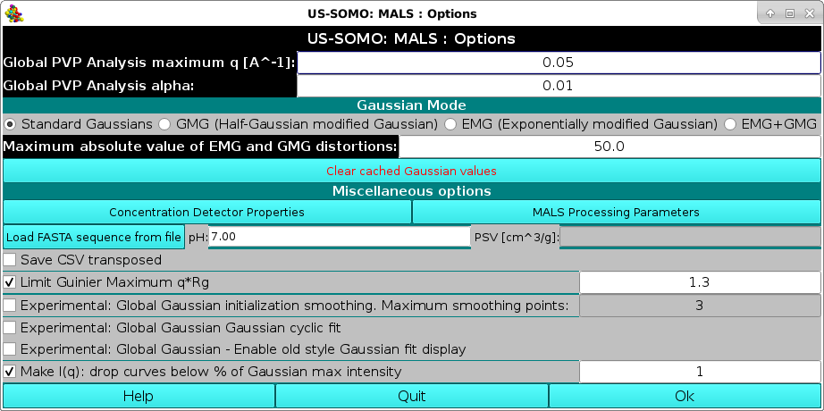 |
See here for a description of this module.
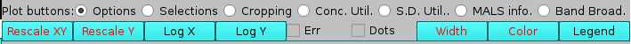 |
The Options checkbox will enable these buttons:
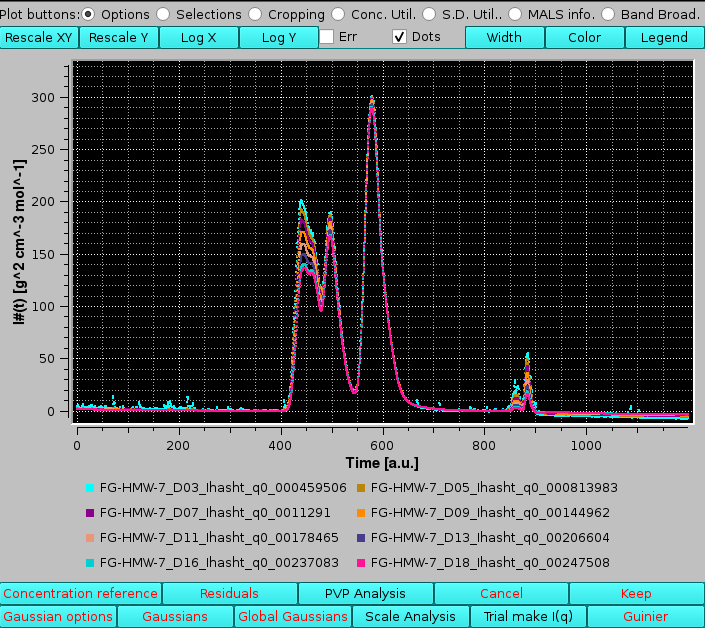 |
The Selections checkbox will enable these buttons:
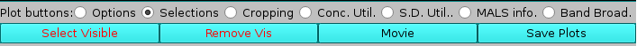 |
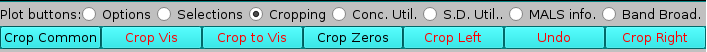 |
When a part of the graph is selected using the mouse/left button, the buttons become all available (only Crop Zeros and Crop Common are available when files are just displayed after selection).
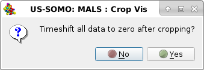 |
asking if after cropping the remaining x-axis values should start at t=0, maintaining the original time interval between the remaining points. Answering "Yes" will perform the time-shift operation, and a second pop-up panel will appear, reporting the time-shifting value such as in this example:
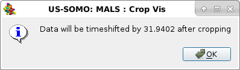 |
Pressing "Ok" the operation will complete.
The Conc. Util. (Concentration Utility) checkbox will enable these buttons:
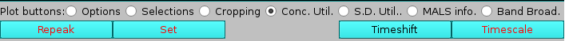 |
They are used to deal with chromatography data coming from a concentration detector, such as absorbance (UV-Vis) or refractive index (RI). These data are usually on a different intensity scale, and time-shifted because of the placement of these detectors either before or after the MALS cell. To deal with these problems, we need first to scale the concentration-associated chromatogram to a MALS I#(t) vs. t chromatogram at a q value, and then to time-shift it to align it in the time domain.
To demonstrate these procedures we use the SEC-MALS data acquired on the HMW-FG sample described above in the Add files procedure description, with the data already processed using the Make I#(t) function. The concentration-associated data were an absorption profile at 280 nm collected with a DAD (Diode Array Detector), time-shifted and-broadened to match the light scattering profile shape when the data were processed using ASTRA©, and already present in the Rayleigh ratios csv file that was uploaded in the Add files procedure (see here).
The concentration data are first selected:
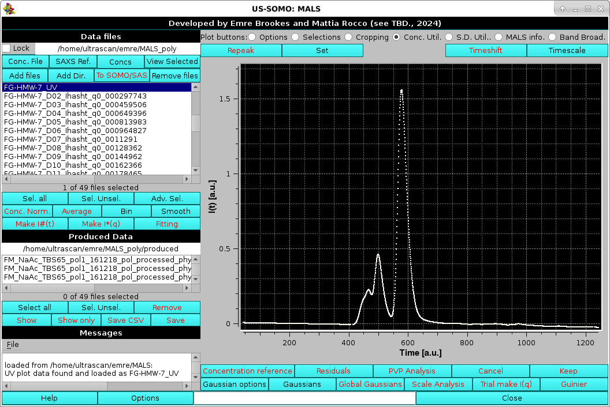 |
Then, usually the light scattering chromatogram acquired at the right angle (90°, corresponding to detector #11 in the DAWN HELEOS-II MALS photometer used in this example) is also selected (Legend was also pressed in the Plot buttons Options) :
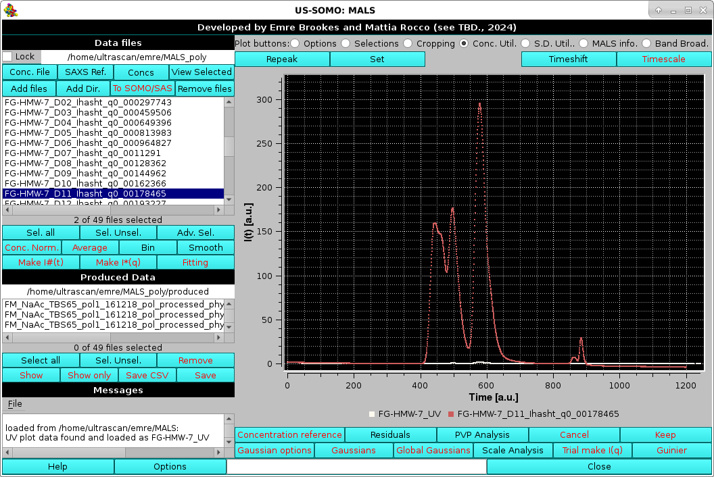 |
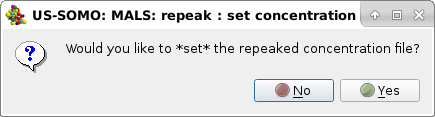 |
asking if you want to "*Set*" (see below) the repeaked concentration file. In this case the answer will be Yes, since the two chromatograms were already aligned on the x-axis.
The repeak operation affects the data, a new file is generated with "rp" extension and the scaling factor, which will be used to re-generate the proper intensity scale when needed, added at the end of the filename:
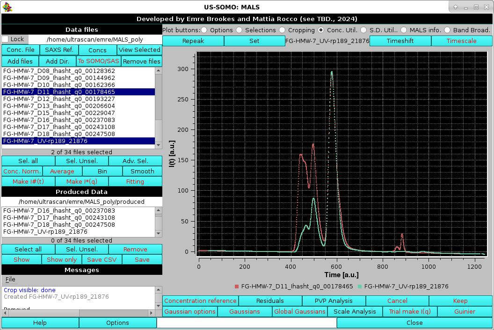 |
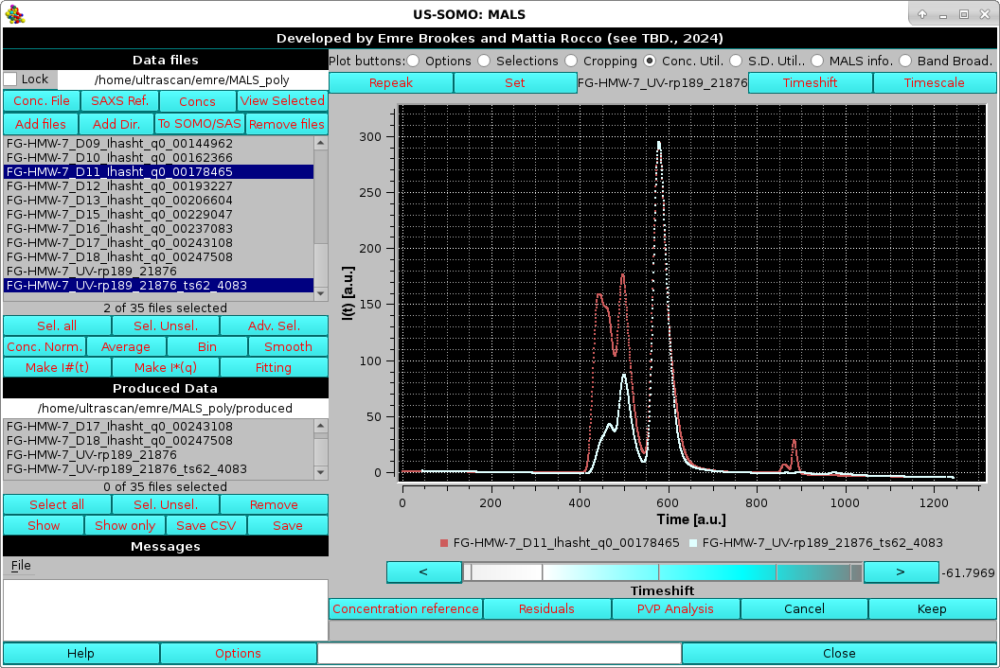 |
If this traslation doesn't occur automatically, it can be initialized by acting on the "<" and ">" buttons at the extremities of the cyan-shades bar-wheel below the graphics window. The resulting traslation of the concentration-associated dataset can be either refused by pressing Cancel, or accepted by pressing Keep using the buttons placed below the graphics window. On pressing Keep, another pop-up panel will show up:
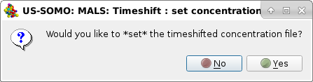 |
Pressing No will defer this important decision, pressing Yes will already define this repeaked, time-shifted concentration-associated chromatogram as the source of frame-by-frame concentration values for the MALS data:
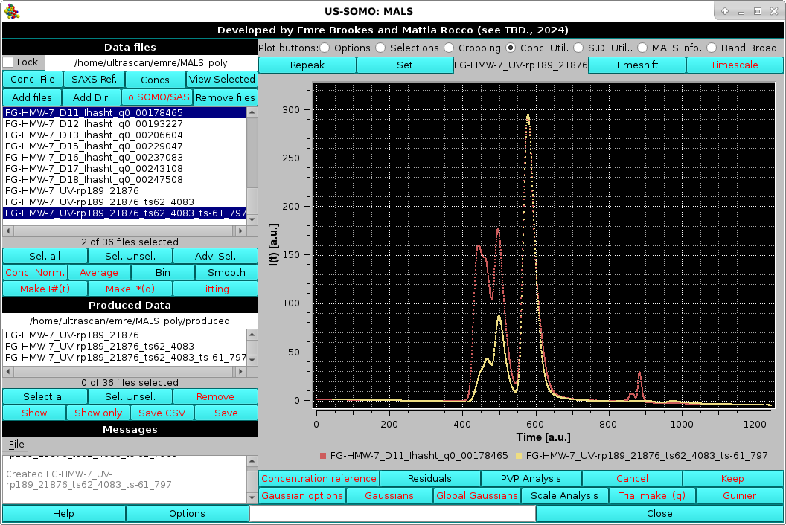 |
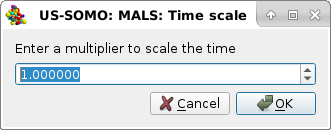 |
were a multiplying factor can be entered. For instance, if the time units of the concentration data were minutes, and those of the MALS data were seconds, entering "60" and pressing Ok will bring the concentration data on the same time units as the MALS data. This operation, if needed, should be done before any other in this panel. Pressing Cancel will abort this operation.
The S.D. Util checkbox has two buttons:
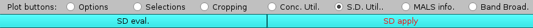 |
This utility, derived from the way the SD are evaluated in the ASTRA© software, estimates the errors associated with the MALS data. This might become useful if no errors have been already associated with the experimental data, or if their reliability is questionable.
The method is based on the assumption that the fluctuations of the signal at the baseline level are a good representation of the error associated with the data at any other point along each I#(t) vs. t chromatogram. Therefore, by estimating the average fluctuations in flat regions of the chromatogram, a constant SD value can be associated with every datapoint in that particular chromatogram. Obviously, chromatograms corresponding to different scattering angles will have different values for their respective constant SD.
Pressing SD Eval will change the graphics window and on the left side of the graph two vertical dashed red lines will appear, which can be repositioned by clicking on the red-background boxes at bottom and entering a different value or using with the mouse the cyan-shades bar-wheel positioned below the graph:
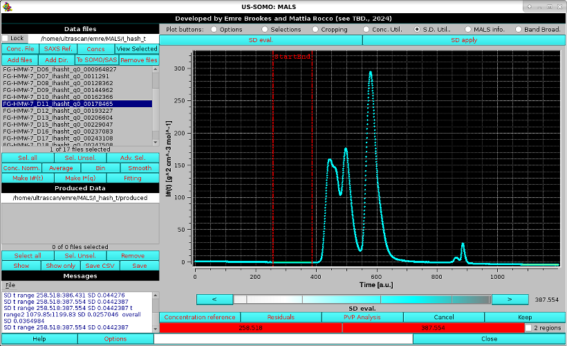 |
By selecting the 2 regions checkbox, a second set of magenta-colored vertical dashed bars will appear, which can be likewise positioned:
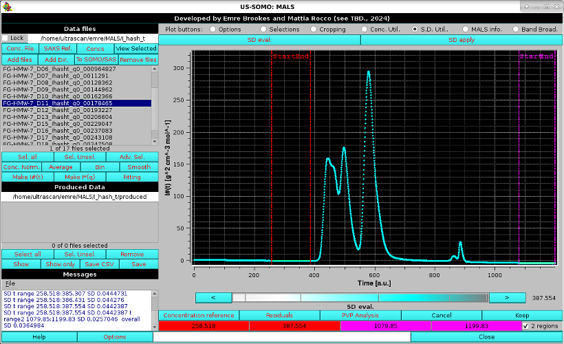 |
The Messages box will list any movements of the vertical bar and provide an evaluation of the average SD over the chosen region(s).
Pressing Cancel will abort the operation, pressing Keep will save the currently selected region(s).
All chromatograms can be now selected, and pressing SD apply the new SD evaluation can be performed. New files with the extension sde will be generated, and can be visualized:
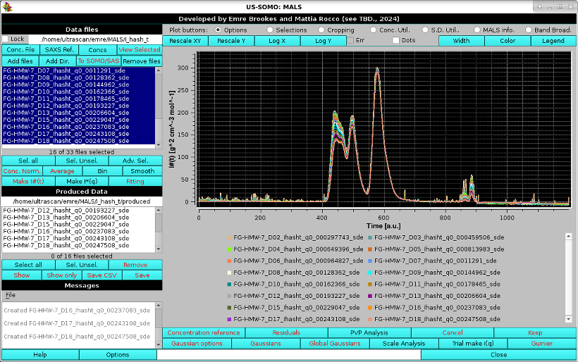 |
A comparison between the original (yellow) and the newly evaluated (tan) SDs for a peak region of the detector 2 data can be seen in this image:
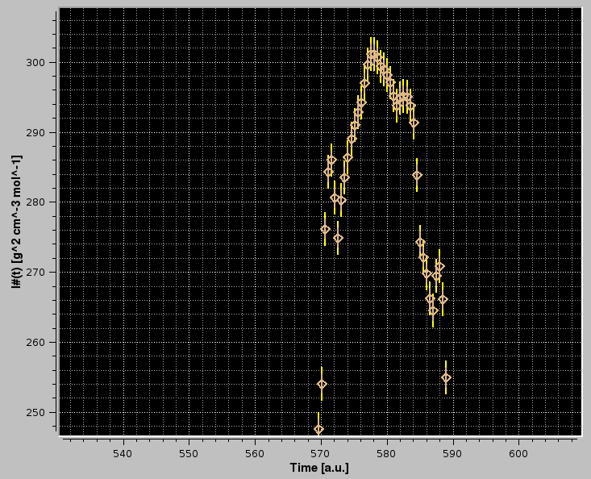 |
The newly created files can be saved from the Produced Data section.
MALS info: selecting this checkbox will present a single button and show a listing of the correspondence between detector numbers, their associated original and RI-corrected scattering angles, and their derived q-values, together with other information loaded from the scattering angles file. If files are selected in the graphics window, they will appear on a small scale at the bottom of the MALS info panel:
We will now demonstrate the generation of I*(q) vs. q data from I#(t) vs. t chromatograms using the Set associated A280 UV chromatogram.
First, we crop the I#(t) vs. t chromatograms to maintain only the peaks region without the baseline regions, using the Crop to Vis button:
Then, we press Make I*(q), and a pop-up will appear:
 |
alerting that no Gaussians were defined for this dataset and thus the resulting I*(q) vs. q data will be generated without any decomposition to resolve not-baseline separated peaks. On pressing "Ok", anothe pop-up will appear:
where two parameters used to calculate the molecular weight from extrapolation to q=0 (using any standard method, like Guinier or Debye plots), the extinction coefficient [ml mg-1 cm-1] used to convert the chromatographic data of the UV absorbance at a specific wavelength to time-dependent concentrations [mg/mL], and the differential refractive increment of the solute at the MALS wavelength dn/dc [mL/g], must be entered. Note that a dn/dc value is already present, taken from the Global dn/dc value stored in the MALS Processing Parameters module (accessible from the Options module, see here), while a Global extinction coefficient was not stored there. After entering an appropriate extinction coefficient:
pressing the Continue button will start the generation of the time-dependent I*(q) vs. q data, monitored by the progess bar at the bottom (Quit will instead halt the I*(q) vs. q conversion operation):
Importantly, all the parameters used to generate the I*(q) vs. q individual files are stored in the header of each file, as can be seen in this example, accessed by pressing the View Selected button:
The resulting I*(q) vs. q data can be also visualized using the Movie button (see here) present activating the Selections round checkbox above the graphics panel:
Here we have first selected Show reference that will upload the concentration-related chromatogram, and we have also already run the movie feature to reach a frame (#99) at the top of one of the peaks:
where we have also pressed the Log X and Log Y buttons under the Options round checkbox. A visual extrapolation to q=0 of the flat region of this curve indicates a ∼1x106 g/mol value for the weight-average molecular weight <M>w at the top of this peak, rougly corresponding to a fibrinogen trimer (FG molecular weight is ∼340,000 g/mol). We can check two other frames, #155:
where the <M>w is roughly that of a FG dimer, and #316:
where the <M>w indicates the likely contamination of the FG main peak with some degraded material, calling for a full decomposition to better characterize this sample.
We can use this I*(q) vs. q and an I#(q) vs. q datasets to demonstrate the use of the Concs and Conc. Norm. buttons.
With the current I*(q) vs. q dataset, pressing Concs will open up a pop-up window where all the files currently loaded are listed, and, if available, any associated concentration value is shown:
Note that only the I*(q) vs. q files have an associated concentration value.
In this case, since I*(q) vs. q are by definition already "normalized" by each time-point-associated concentration, no meaningful operations can be carried out within this module. We load instead a series of I#(q) vs. q time points, obtained from the fibrin repolymerization data (see here) and converted from I#(t) vs. t using the Make I*(q) button without having entered a Global concentration value (see here):
Pressing again Concs will re-open the pop-up window:
We can now illustrate the several buttons present in this module:
and then use the Copy values and Past values to all to propagate the entered concentration value to all files:
Pressing Save values will exit updating in the MALS module the changes made.
When selected I#(q) vs. q files have an associated concentration value, the Conc. Norm. button becomes available. Pressing it will divide the intensities by their associated concentration. The resulting files will have "_n" appended to their filenames. The differences between the original and concentration normalized files can be seen in this example:
The concentration normalized files can also be averaged using the procedures described here:
Below the US-SOMO MALS module graphics panel there are a series of buttons for performing several operations on the files displayed, some of which will become available only when multiple files are selected, or a region of the graph is zoomed, while others will become available only when single files are selected:
Note: some buttons are not always visualized, but will appear in place of others when some functions are called, such as in the SD evaluation procedure described above.
Selecting the Reverse checkbox will invert the order of comparison and thus the sign of the differences. Selecting the Use standard deviations checkbox will weight the residuals by the associated SD of each point:
Selecting instead the By percent checkbox the residuals will be plotted as % values:
The residuals plot can be toggled off by pressing again Residuals.
Gaussian decomposition of not baseline-resolved peaks is another utility present in the US-SOMO MALS module, whose theory can be seen here. Three buttons control the Gaussian decomposition procedure: Gaussian options, Gaussians, and Global Gaussians.
It also offers the possibility of re-initializing the Gaussian analysis by pressing the Clear cached Gaussian values button. For this demonstration, we will change the selection from the default Standard Gaussian checkbox to EMG+GMG (Exponentially Modified Gaussian plus Gaussian Modified Gaussian), which can properly take into account the skewness often present in chromatographic data. Note that on selecting any of the options listed, the Gaussians button label will change accordingly, e.g. it will be labeled GMG, or EMG, or EMG+GMG.
Quit will exit from this pop-up without retaining any changes, Ok will exit maintaining any changes made.
On pressing EMG+GMG, two new rows of buttons/fields and two checkboxes will appear at the bottom of the graphics window, together with two vertical red dashed lines indicating the Fit start and Fit end points of the Gaussian fitting region, whose directly editable values (default: at the beinning and end of the available data) appear in the two red-background fields in the bottom row:
If a previously-generated set of Gaussians was present or loaded from file, the Gaussians will automatically show up under the peak(s) together with vertical lines indicating their centers, such as in the example above.
See here for a description of the Fit module.
In the first cycle of iterations, it is best to keep the original centers fixed, and also fix all Gaussian except that under the major peak. The Levenberg-Marquardt (LM) algorithm is used throughout this example:
Then the first three Gaussians are initially fitted, fixing the other two and keeping fixed all centers' positions:
The cycle is completed by fixing the first four Gaussians and fitting only the fifth, still keeping all centers fixed:
We can now release all Gaussians, and allow the centers to move by a fixed percentage (5% in this case) from their original positions. After a couple of LM cycles, we obtain this fit:
Releasing all constraints will produce this final fit:
which shows a couple of regions, the top of the third Gaussian and the through between the third and the fourth Gaussian, not well fitted. Note that the Use standard deviation checkbox for the Residuals was not selected in this case, as the SD associated with these data are extremely low. Indeed, if we select the SD checkbox at the left of the Fit button, and perform another round of fitting, no appreciable changes are obtained.
Note: when using the SD checkbox, if some datasets have missing or NaN values for one or more SD values, a pop-up menu will appear listing all the files presenting this problem, and with how many occurrences. The user can then select between three options: drop the datasets containing these non-defined SDs; drop just the frame (or time) point missing the SD(s); or not use SD weighting.
The global improvement of the fit can be also judged by the rmsd (SD checkbox not selected) or χ2 (SD checkbox selected) value which is updated next to the Fit button.
For this sample, we can try and improve the fitting by adding a sixt Gaussian and restarting, having cleared the actual Gaussian values and restricted the fit range. A lower q-value detector, #6, was also chosen to enhance the scattering contribution of the larger material eluting early:
After a couple of rounds of LM fits, an improved fit is obtained, this time with the remaining noticeable discrepancy at the tail end of the sixt Gaussian:
Adding a seventh Gaussian to compensate for the main peak tailing will lead to a further improved fitting:
Here we have set the Residuals plot to By percent to better appreciate the discrepancies in the most interesting regions.
Once an initial set of fitted Gaussians has been produced, it should be globally fitted to all chromatograms. While in the case of SAXS data performing this operation directly on all chromatograms can be very computationally intensive, this is not the case for MALS data, usually containing no more than 20 q-points. Therefore, we will select all the I#(t) vs. t data for the 16 q-values in this FG SEC-MALS example. Importantly, in the global fitting procedure the centers and widths of each particular Gaussian are optimized so to be the same across all chromatograms, and only the amplitudes are then fitted.
Since MALS data usually have very low associated SD values, the fit could be performed without turning on the SD weighting. In this example, we are nevertheless using it, and Turn on is then selected. Global Gaussians will also restore parameters saved in a file after a satisfactory fitting is attained. For this reason, another pop-up panel could appear:
In this example, since we are working with just produced Gaussians and not with parameters loaded from a saved file, another pop-up will appear:
Pressing "Ok" will allow Global Gaussians to proceed:
In the image above, the Global Gaussians results on all the MALS datasets are shown, together with the grouped fit residuals. The common centers and widhts, not optimized but just based on the initial chromatogram fit, are displayed in the graph as vertical and horizontal bars, respectively. Note that the Residuals x-axis scale was manually optimized (right-click on the scale to access the plot options menu).
Note that since these MALS data have non-integer times, the SD-weighting was automatically turned off, as it is not supported in this case.
Note also that due to the very low fluctuations associated with these MALS datasets, the P-value analysis yields extremely poor values, as contiguos streches of not perfectly fitting Gaussian values are unavoidable. Therefore, the P-value analysis is of little meaning in this case.
We can do the global fit with all the Gaussians free to adjust, obtaining a slight improvement of the global normalized χ2:
In the image above, the results of the Global fit are shown together with the grouped fit residuals. Furthermore, a new set of tools is available to judge the goodness of the fit:
In the Global fit by q graph it is possible to visualize either one of or both the two plots, by selecting/deselecting their respective checkboxes positioned just below it (Plot Chi^2/RMSD and Plot P values).
In the image above, corresponding to the I#(t) vs. t chromatogram at the lowest q-value available (detector #2), the Global fit by q graph is not shown (if it were, the current chromatograms pair would be highlighted in the P-values and normalized χ2 plots by an enlarged symbol).
In the top graph, the color of the original I#(t) vs. t chromatogram is cyan (it can be changed by pressing Color), the individual Gaussians are green, and their sum is yellow (both fixed colors).
As can be seen, the fit is not good at the top of the first Gaussian and also at the main peak, but reasonable in all other places.
Scrolling is performed by either using the cyan-scale bar-wheel, or by clicking on the the "<" and ">" buttons placed at its sides. We can now examine the fit at another q-value, corresponding to detector #5, where we can see that the fit is now very good in most places except still the first Gaussian, which is nevertheless improved:
The fit improves with detector number, and we can now accept it by first deselecting the Scroll checkbox and then pressing first Save and then Keep.
A re-peaked (and if necessary time-shifted) concentration chromatogram can be now fitted with Gaussians, using for initialization the set derived from the I#(t) vs. t chromatograms (note: it is mandatory that the same number of Gaussians be used for both the concentration and I#(t) vs. t chromatograms).
This is done by first selecting only the concentration chromatogram and then pressing Gaussian (EMG+GMG in this example), which will bring up the current Gaussian parameters automatically rescaled to the highest intensity in the concentration chromatogram:
note how the intensities of the early eluting peaks are much smaller in the UV chromatogram, as their concentration is relatively small while they scatter strongly due to their sizes.
Pressing Fit will then bring up the Fit window (see here), with the centers fixed as the default option, since for MALS-associated concentration detector data usually a band broadenig operation is performed before exporting them:
Fit is then pressed, obtaining these results:
that can be considered satisfactory, given the smoothness of the original data.
The Save and Keep buttons must be then pressed to store and associate the resulting Gaussians to the concentration chromatogram. On re-generating the I*(q) vs. q frames (see below), each concentration Gaussian peak will be mapped onto the corresponding I#(t) vs. t peaks.
The Make I*(q) button becomes available every time that more than one I#(t) chromatogram is selected. If Gaussian fitting was performed, pressing it will produce a series of I*(q) vs. q curves for each Gaussian peak for each frame of the chromatogram on which the global operations have been carried out. An option panel in a pop-up window will allow several choices:
 |
A description of this module can be found here.
This document is part of the UltraScan Software Documentation
distribution.
Copyright © notice.
The latest version of this document can always be found at:
Last modified on February 13, 2026